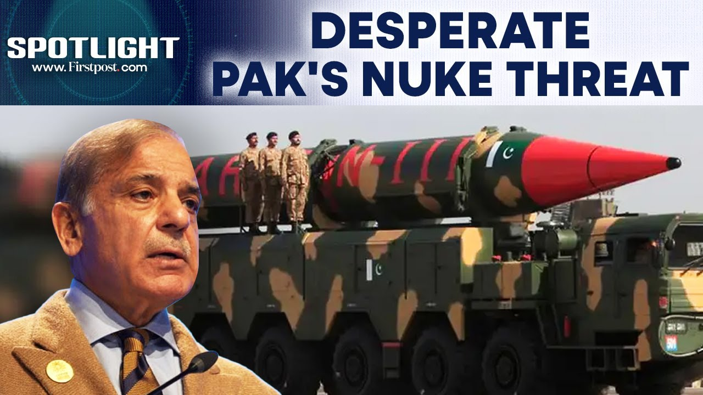

【印度在帕哈尔加姆恐袭后驳斥巴基斯坦的核威胁 | 焦点 | N18G】
Summary: As tensions rise between India and Pakistan following the Pahalgam terrorist attack, Pakistan's provocative nuclear threats and inflammatory rhetoric escalate regional instability, while India warns of a strong response.
摘要： 印度和巴基斯坦在帕哈尔加姆恐袭后紧张局势升级，巴基斯坦挑衅性的核威胁和煽动性言论加剧地区不稳定，而印度警告将作出强硬回应。

⏱️ Estimated Reading Time: 4 min
As India prepares to retaliate after last week's Pakistan sponsored terrorist attack in Jammu and Kashmir, the corridors of power in Islamabad have been rattled by the scale of Indian diplomatic offensive so far.
印度准备对上周巴基斯坦在查谟和克什米尔发动的恐怖袭击进行报复，伊斯兰堡的权力走廊已被印度迄今为止的外交攻势规模所震动。
Responding to India's suspension of the Indus waters treaty, Pakistani minister Hanf Abbasi openly threatened New Delhi with nuclear retaliation.
针对印度暂停印度河水条约，巴基斯坦部长汉夫·阿巴西公开以核报复威胁新德里。
Abbasi said if India halts Pakistan's water supply from the Indus river system, it should quote prepare for a full-scale war unquote.
阿巴西表示，如果印度停止巴基斯坦从印度河水系获得供水，它应该“准备迎接一场全面战争”。
He declared that Pakistan's nuclear weapons are not for display and their locations are hidden across the country.
他宣称巴基斯坦的核武器不是摆设，其位置隐藏在全国各地。
Meanwhile, Pakistan's defense minister Khawaja Asif denied the country's longstanding support for the Lashkar-e-Taiba, the Pakistan-based terror group, which is said to be behind the Pahalgam terror attack.
与此同时，巴基斯坦国防部长赫瓦贾·阿西夫否认该国长期支持据称是帕哈尔加姆恐袭幕后黑手的巴基斯坦恐怖组织“虔诚军”。
Khawaja days after himself admitting Pakistan's history of supporting, training, and funding terrorist organizations, this time proclaimed Islamabad's innocence in the Pahalgam attack.
赫瓦贾在承认巴基斯坦支持、训练和资助恐怖组织的历史几天后，这次宣称伊斯兰堡在帕哈尔加姆袭击中是清白的。
The Pakistani defense minister said the country was quote unquote ready to cooperate with any investigation conducted by international inspectors.
巴基斯坦国防部长表示，该国“愿意”配合国际检查员进行的任何调查。
In a bizarre move, the minister later unilaterally invited China and Russia to investigate the attack.
在一个奇怪的举动中，该部长随后单方面邀请中国和俄罗斯调查此次袭击。
Prior to the defense minister, Pakistani politician Bilawal Bhutto Zardari threatened to drench the river Indus with Indian blood.
在国防部长之前，巴基斯坦政治家比拉瓦尔·布托·扎尔达里威胁要用印度人的血染红印度河。
Now the scion of Pakistan's once ruling Bhutto family said and I quote either our water will flow through it or their blood.
现在，巴基斯坦曾经执政的布托家族的后裔表示，“要么我们的水流过它，要么他们的血流过它”。
Now the comment led to justifiably fierce reactions from India.
这一言论理所当然地引发了印度的激烈反应。
There is all this inflammatory rhetoric.
请听。
The Pakistanis have to understand that they cannot kill Indians with impunity.
所有这些煽动性言论。
We have no designs on Pakistan but if you do something to us then be prepared for a response and if blood is going to flow I'm sorry to say it will flow possibly more on their side than on ours.
巴基斯坦人必须明白，他们不能逍遥法外地杀害印度人。
As tensions rise between India and Pakistan following the Pahalgam terrorist attack.
我们对巴基斯坦没有企图，但如果你们对我们采取行动，那就准备好迎接回应，如果血流成河，我很抱歉地说，他们的血可能比我们的流得更多。
Pakistan's provocative threats continue to push the region toward instability with its own house crumbling.
在帕哈尔加姆恐怖袭击之后，印度和巴基斯坦之间的紧张局势加剧。
Pakistan would be better served if its political and military leadership took care of its internal affairs rather than try to sow chaos in the region by resorting to its old playbook of aiding and abetting terror.
巴基斯坦的挑衅性威胁继续将该地区推向不稳定，而其内部也在崩溃。
Greeting you with aloha and namaste.
如果巴基斯坦的政治和军事领导层处理好其内部事务，而不是通过沿用其支持和煽动恐怖的老套路在该地区制造混乱，那将更有利于巴基斯坦。
No, I I I love India.
用“阿罗哈”和“合十礼”问候你。
Presence uh occupation of a territory by another country pertains to India.
不，我我我爱印度。
what we saw in Kashmir and the prime minister.
呃，另一个国家对领土的占领与印度有关。
How do you see Trump's America?
我们在克什米尔和总理身上看到的。
Yes, the current administration behaves differently from the previous administration.
你如何看待特朗普的美国？
powers who are trying to bring down the current government in Syria.
是的，现任政府的行为与前任政府不同。
Exactly. Bulangi, Iran, maybe Russia actually.
试图推翻叙利亚现政府的势力。
Prime Minister Modi committed to South-South, you know, cooperations for not over 50%.
没错。布兰吉、伊朗，也许实际上是俄罗斯。
Is Ukraine prepared to pay the price for that peace?
莫迪总理致力于南南合作，你知道，不超过50%。
No compromises at the cost of territorial integrity and sovereignty.
乌克兰准备好为和平付出代价了吗？
very much having
不以领土完整和主权为代价妥协。